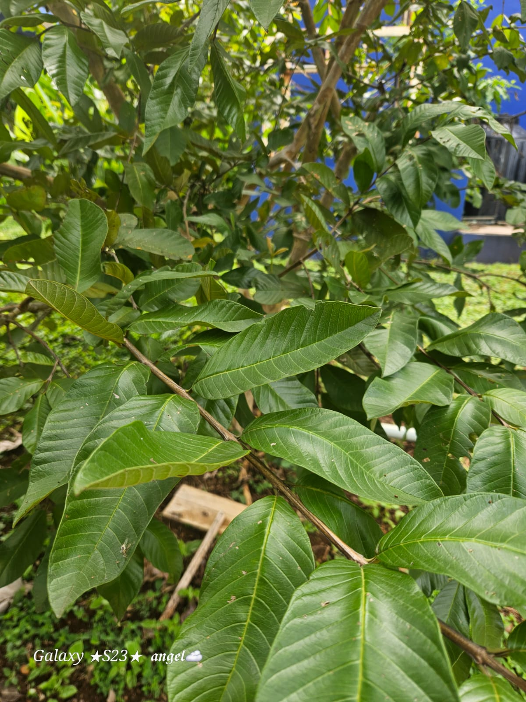
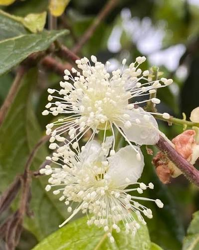

Guayaba

Galería de la guayaba
📸 Galería de la guayaba




×

Nombre científico
Psidium guajava L.
Familia
Myrtaceae
Descripción
La guayaba es un árbol frutal de importancia alimentaria y medicinal. Puede crecer en zonas tropicales y produce frutos comestibles de gran importancia para las comunidades. Tiene hojas simples , de forma eliptica u ovalada . Son de color verde y con una textura un poco aspera , presenta tambien una nervadura bastante marcada y el borde es entero y la hoja es de tamaño mediano.
Usos
El fruto se utiliza principalmente como alimento. Sus hojas también son utilizadas tradicionalmente para preparar té.
📍 Lugar donde fue encontrada
Municipio de Huehuetan, Chiapas.